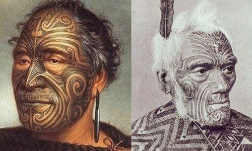
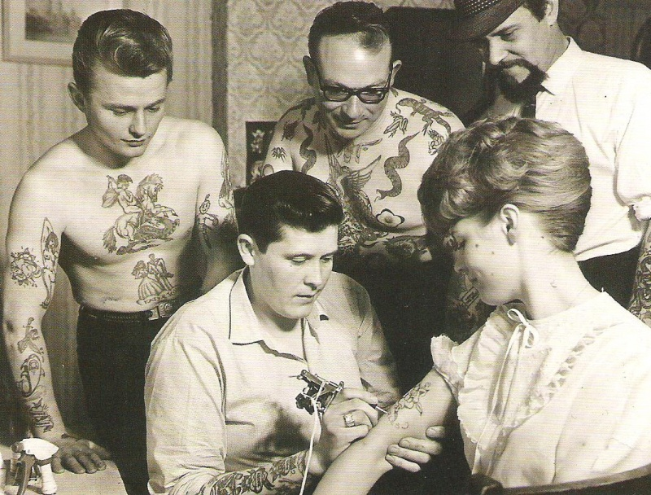

El arte de tatuar se remonta en el tiempo más lejos de lo que la mayoría de la gente piensa.
Los Egipcios ya conocían y practicaban la técnica del tatuaje hace 3000 años. Se sabe que ya que desde la XI
dinastía egipcia se practicaba el arte del tatuaje. Uno de las más famosas momias tatuadas Amunet, una sacerdotisa
de la diosa Hathor, en Tebas.
Se le observaron varios líneas y puntos tatuadas sobre su cuerpo. En la Momia de Asecond también se encontraron
estos mismos modelos, pero además tenía punteada su región púbica más baja. Las evidencias hasta la fecha sugieren
que en el antiguo Egipcio este arte fue restringido a las sacerdotisas.
La prueba de que el tatuaje ha convivido desde siempre con el hombre se encontró en 1991 en un glaciar situado en la
frontera entre Austria e Italia. Allí apareció congelado un cazador neolítico de hacía 5300 años, con la espalda y
rodillas tatuadas.

El tatuaje fue reintroducido en la sociedad occidental por los expedicionarios ingleses dirigidos por el Capitán Cook
en su vuelva de Tahiti en 1771. Esto explica la natural asociación que ha prevalecido hasta nuestros días entre los tatuajes
y los marineros.A modo de anécdota contaremos que Don Juan de Borbón (Padre del actual Rey de España) llevaba su antebrazo
derecho tatuado, un recuerdo de su estancia en la marina Inglesa. Y que miembros de la realeza británica volvieron tatuados
de sus expediciones por los Mares del Sur.
La asociación entre tatuajes y delincuencia provinó también de aquí, los marineros, gente que menudo se embarcaba durante
argos períodos de tiempo para evitar a la justicía, fue fomentando esta asociación.
Los tatuajes permanecieron en letargo hasta que resurgieron con los hippies en los años 60 y 70, estos adoptaron el tatuaje
y lo elevaron a la categoría de arte, abandonando los motivos marineros y realizandose grandes diseños muy coloristas, acorde
con la época. Esto hizo salir el tatuaje de los puertos y empezó una primera popularización del tatuaje.

En Norte América, se asoció el tatuaje con prácticas religiosas y mágicas, era un rito simbólico y una marca única que permitiría
que el alma superara los obstáculos en su camino a la muerte. El tatuaje era una práctica común entre los nativos de América Central,
los nativos tatuaban en sus cuerpos imágenes de dioses. El arte del tatuaje fue redescubierto por los exploradores. Banks, artista
científico que navegó junto al Capitán Cook, describió en 1769 el proceso del tatuaje de la Polinesia. Los marineros de Cook iniciaron
la tradición de los hombres de mar tatuados y extendieron rápidamente esta aficción entre los marineros, quienes aprendieron el arte y
lo practicaron a bordo.También fueron los viajes de Cook los que describieron el arte Moko entre los maoríes, un doloroso y elaborado
proceso que duraba meses y que daba por resultado diseños negros en espiral y a rayas.
Alrededor del 1000 A.C el tatuaje logró la entrada por medio de las rutas comerciales a la India, China y Japón. A pesar de un glorioso
inicio en Japón, el tatuaje estaba reservado para aquellos que habían cometido crímenes serios, y los individuos tatuados eran aislados
por sus familias, ésto constituía el peor de los castigos. El emperador Matsuhito, ante la apertura de Japón al occidente decidió prohibir
los tatuajes para no dar la impresión de salvajismo ante los extranjeros.
En España, se puede empezar a hablar de tatuaje y de tatuadores alrededor de los años sesenta y setenta. Esta actividad comenzó en las zonas
portuarias, donde se tatuaban marineros pero también personas adineradas que disponían de embarcación. A finales de los años setenta y principios
de los ochenta, el fenómeno se difundió todavía más, de manera especial entre las clases medias altas, con el nacimiento de una cultura alternativa
que consideraba este arte como una forma de extravagancia. En los años ochenta, bajo el impulso de la cultura punk, heavy, rocker y de otras nuevas
tendencias los jóvenes empezaron a interesarse por el tatuaje.